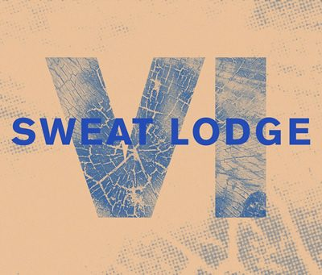

Sweat Lodge is celebrating 6 years


A crucial element for much of the electronic artistry that emerges out of Berlin are the agency teams, working hard to ensure the musical talent are offered the exposure they deserve. Unsung heroes to a degree, Sweat Lodge IV in the first weekend of May is one such party that’s set to showcase some of the musical excellence they’ve helped bring to the world.
It’ll be a celebration of the six-year role that Berlin’s Sweat Lodge Agency has played in supporting, developing and representing a wealth of underground DJs and producers. Bubbling to life originally in Tel Aviv, its current home in the German capital was established in 2007, launching with the likes of Oliver Deutschmann, Ed Davenport and Iron Curtis already in the fold. Currently representing over 30 artists, it was too much to ever fit on the single lineup; though the organisers promise one that’s representative of the agency’s sound ethos.
The party’s most impressive feat is how they’ve curating several bleeding-edge acts to cast an eye to the future, alongside the veteran acts to showcase the agency’s past. The techno room definitely puts the focus on the ‘fresh’, hosting possibly the night’s most exciting prospect; Ed Davenport’s debut live show under his ‘Inland’ alias, a project unveiled only last year as a means of exploring a grander, spacier, more ambitious shade of techno.
The techno room will also host the Berlin debut of Sweat Lodge up-and-coming favourite A Sagittariun, alongside performances from Donnacha Costello and Joel Alter. The house room on the other hand has sets lined up from Agnès from Sthlmaudio Recordings, Iron Curtis and Edit Piafra performing together as Achterbahn D'amour, as well as another two names tipped for success by Sweat Lodge Agency, The Drifter and Quell.
The ever faithful driving forces behind the agency, Elie Eidelman and James Blonde will also be on hand for performances, and the finishing touch is the Stattbad as the choice of venue in Berlin’s bristling district of Wedding. This means Sweat Lodge IV will be set in the refurbed basement of what was once a swimming pool, and now one of the city’s very best small clubs.
Sweat Lodge VI @ Stattbad
Line-up
Agnes (Sthlmaudio Recordings / Drumpoet Community)
Quell (Ibadan Records / These Days)
The Drifter (Permanent Vacation / Maeve)
Achterbahn D'Amour aka Iron Curtis & Edit Piafra (Absurd/Acid Test / Frank Music )
--
A Sagittariun - Berlin debut (Elastic Dreams)
Inland aka Ed Davenport (live) (Counterchange / Vidab)
Donnacha Costello (Poker Flat Recordings / Minimise)
Joel Alter (Bass Culture / Sweat Shop)
-
Hosted by Elie Eidelman & James Blonde
www.sweatlodgeagency.com | www.stattbad.net